바다는 무엇을 따라야 하는가 — 연재 5회
문화 ․ 생활
바다는 무엇을 따라야 하는가?Ⅴ
Maritime space follows something?Ⅴ
요즘 우리나라 농촌을 대상으로 한 농식품부의 ‘농촌 융복합 산업육성 및 지원에 관한 법률’을 근거로 소위 6차 산업 관련 제안 사업들이 계획되고 시행중에 있습니다. 간단하게 살펴보면 6차 산업화는 1990년대 중반 일본에서 주창된 개념인데 1차 산업인 농림 축수산물의 생산업과 2차 가공산업 또는 3차 서비스업을 융합하여 농업의 복합산업를 도모하는 것을 의미하는데 6차라는 의미는 1차×2차×3차=6차를 나타냅니다.
6차 산업화는 농업이 1차 산업(농축산물의 생산)에 머무르지 않고, 2차 산업(농축산물의 가공,식품제조업)및 3차 산업(소·도매업, 요식업, 정보 서비스업, 관광 등)까지 영역을 확대하여 농촌에 새로운 가치와 기회를 만들어내기 위한 목적을 가지고 있습니다.
한편, 농업의 6차 산업화 개념으로 고령자와 다문화 이주민을 포함한 지역 주민이 주체가 되어 운영하고 지역에 부존하는 다양한 자원(농림축수산물,자연 자원,인재·역사·문화 등)을 활용하여,생산에서 가공·판매·교류 등을 수직적으로 통합하는 새로운 모델로 많은 부분에서 시행되고 있습니다.
우리의 해양공간환경도 개념은 비슷하다고 볼 수 있습니다. 기존의 우수한 해양자원과 관광 요소들 및 컨텐츠들이 있는데 언제나 그 자원만 가지고 가치를 보존하기는 어렵습니다. 농촌의 6차산업화가 농(농산물)+공(가공)+상(마케팅)의 구성을 가지고 있듯이 해양관광, 해양외식, 해양직판매장 등 2차 가공과 6차 융복합의 서비스들이 결합되어야 해양공간환경의 활용 가치가 배가 될 것입니다. 궁극적으로는 쇠퇴해가는 우리 해양공간환경의 사용가치를 향상시켜 지속가능한 해양을 만들 수 있는 하나의 전략이 될 있습니다.
특히 본 기고를 통해 해양공간환경의 구성에 있어 복합 사용성(Mixed-Use)의 디자인 트렌드를 살펴보는 것은 바로 복합산업화의 가능성을 염두에 둔 것입니다.
우수한 사례라고 살펴보는 해외의 공간환경디자인 사례의 공통점은 모두 해양공간의 1차적 자원만을 중심으로 하는 것이 아니라 컨텐츠와 서비스가 결합된 새로운 융복합 모델을 보여주고 있습니다. 이러한 관점에서 국내외 사례를 통해 우리 해양공간환경의 여러 가치와 가능성을 찾아보고자 합니다.
1.일본 큐슈 나가사키현 사세보시 하우스텐보스(HUISTEN BOSCH)
하우스텐보스(Huis Ten Bosch)는 일본 나가사키 현 사세보 시에 있는 테마파크인데 1992년 3월 설립되었습니다. 하우스텐보스란 '숲의 집'이라는 의미의 네덜란드어로 152ha 부지에 길이 6km 운하를 활용한 친수형 공원으로 물과 녹음이 풍부한 자연의 이미지와 이국적인 이미지를 갖추고 있어 많은 방문객들의 사랑을 받고 있습니다.
<그림 1> 하우스텐보스 전경 < IMAGE :>
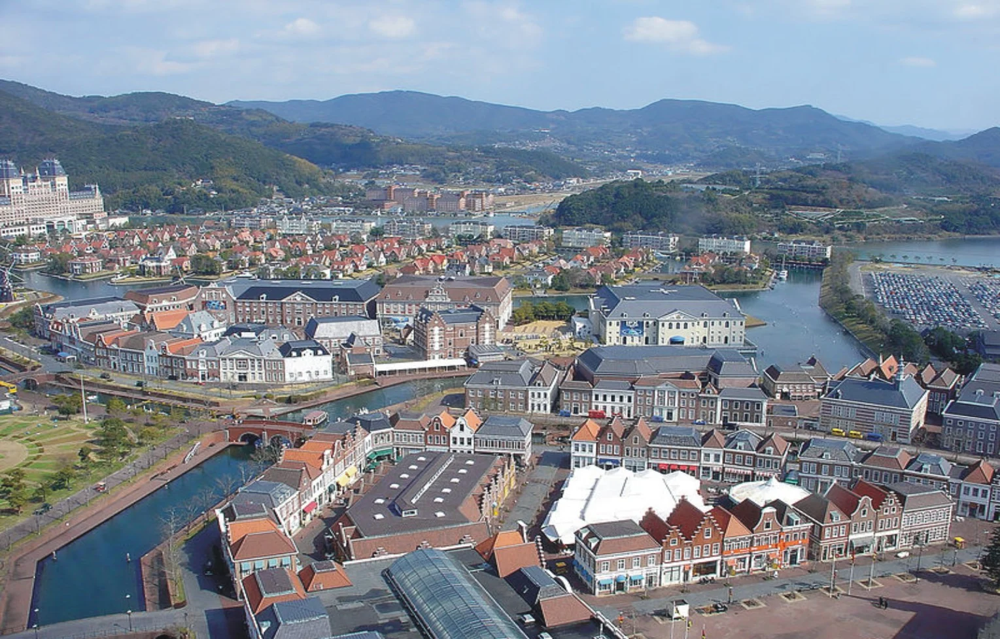
이곳이 네덜란드의 이미지를 차용해 온 이유는 여러 가지가 있겠지만 에도시대, 나가사키는 해외로 개방된 유일한 무역항이었으며 상대국은 주로 중국과 네덜란드였고 같은 동양권이 아닌 네덜란드의 문화가 무척 매력적으로 그들에게 각인 되었을 것입니다. 이러한 역사적 배경에서 착안하고 1600년간 네덜란드와의 교류를 기억하며 남기기 위하여 17세기 네덜란드의 거리를 그대로 재현하게 되었으며 이를 위해 네덜란드 정부와 일본기업의 후원이 있었는데 이 당시만 해도 일본의 경제가 버블경제로 굉장히 투자가 많았기 때문에 민간의 투자가 가능한 일이었습니다.
<그림 2> 팰리스 하우스텐보스 < IMAGE :>
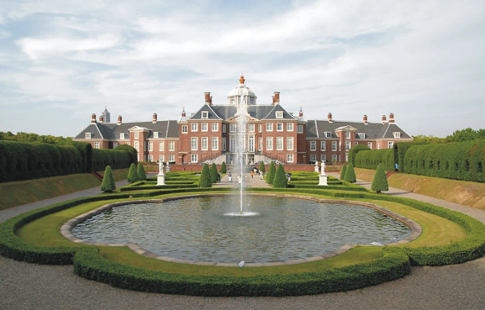
<그림 3> 하우스텐보스 운하 캐널크루즈 < IMAGE :http://korean.huistenbosch.co.jp>
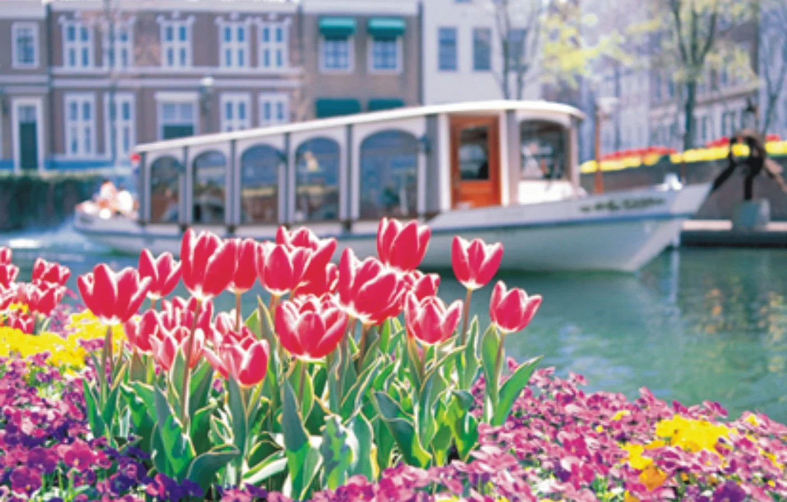
하우스텐보스의 면적은 152헥타르에 다다르며그 곳에 사용된 거의 모든 건축, 조경 소재들은 모두 네덜란드에서 수입해서 지었습니다. 소재외에도 지상건물의 형태 또한 네덜란드의 거리를 재현하였는데 특히 네덜란드 왕실의 승인 하에 왕궁 모양을 그대로 본뜬 미술관도 자리 잡고 있습니다. 테파크이지만 롤러코스터 같은 유원지 시설은 없고 박물관과 극장, 클래식 버스, 클래식 택시, 운하를 운항하는 캐널크루저 등 장내 교통시설이 존재합니다. 우리의 관점으로 보면 유명한 테마파크의 이미지와 같이 유희시설과 어뮤징 시설들이 있을 것 같지만 이국적인 분위기를 운하에 조성해 놓은 정주형 휴게시설의 이미지를 갖추고 있습니다. 또한 동양문화권의 관광객들은 느끼기 어려웠던 유럽의 이미지를 느낄 수 있어 매력을 지니고 있습니다.
<그림 4> 킨델다이크 구역 < IMAGE :http://korean.huistenbosch.co.jp>
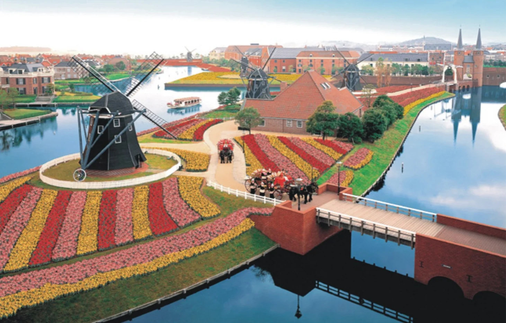
<그림 5> 하우스텐보스 야경 < IMAGE :http://korean.huistenbosch.co.jp>
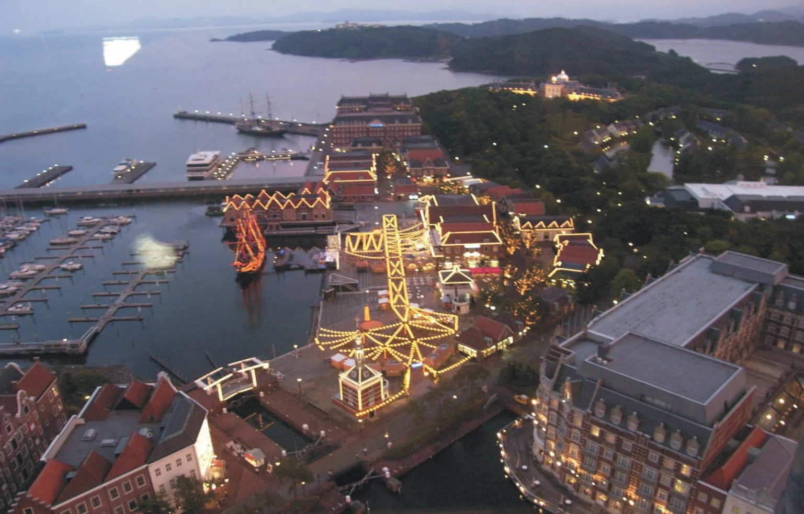
하우스텐보스에도 여러 비판과 위험이 있었는데 특히 디자인에 대해서는 모방하는 디자인이라 하여 여러 비판들이 존재하고 있고 무리한 운영으로 여러 고비를 맞았습니다. 세계적인 경제 위기였던 1996년을 기점으로 입장객이 감소하고, 경제난이 심해지면서 2000년 초반에 두 차례에 걸친 부도를 내었지만 2010년에 들어 민간투자와 상업마케팅을 통해 방문객이 400만으로 증가하며 운영에 있어서도 흑자로 돌아서게 되었습니다.
<그림 6> 하우스텐보스 항구 < IMAGE :http://korean.huistenbosch.co.jp>
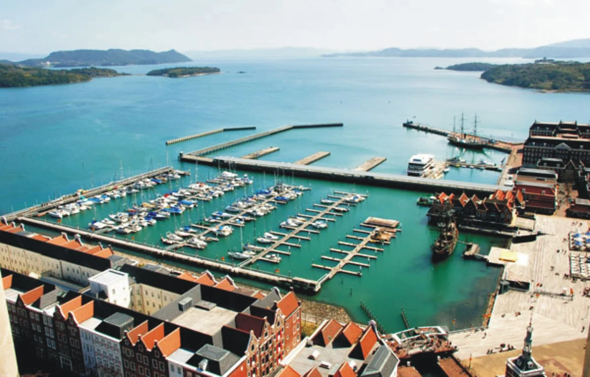
하우스텐보스의 가치는 이러한 운하 친수공간의 활용과 테마파크형의 집객공간을 형성 하였다는 것 외에 지속가능한 계획에 사실 더 큰 가치를 두고 있습니다. 지하에 폭 6m, 높이 2.5m, 전체길이 3.2km의 공동하수구를 연결시켜 케이블 TV,전력, 급수, 통신 등을 공급하고 있으며 담수화 플랜트 계획에 따라 연휴나 가뭄 시 물 부족 현상에 대비하여 해수를 담수로 바꾸는 플랜트를 운영하여 1일 최대 1000톤의 담수를 생산하고 있습니다. 또한 테마파크 내에서 발생한 오수는 고도 정화시설 거쳐 화장실 세정수나 장내 수목에 공급하여 환경보호를 실천하고 있습니다.
열병합 발전 시스템은 총 출력 4,500kw의 가스터빈 발전설비 3대와 가스배출 보일러를 조합하여 구성되어 있는데 도시가스를 이용하여 전기를 생산하고 배열을 이용하여 고압증기를 만들어 내는 시스템입니다. 이를 통하여 냉난방에 사용하는 열 약 60%를 충당하는 등 소중한 열원을 공급하고 있습니다. 이러한 지속가능한 디자인 게획을 통해 '수자원환경상', '에너지 절약센터 회장상', '통상산업대신상', '수자원공적자상', '녹화추진운동 공로자상'등 환경관련 가치를 인정받아 환경적 측면의 많은 수상이 이루어졌습니다.
2.노르웨이 스몰라 에도야 섬 구리센트레트 야외 극장(Gurisentret Outdoor Stage)
노르웨이의 스몰라 지역은 5,000여 개의 작은 섬들로 이루어져 있는 자연 환경이 수려한 지역으로서 그 중에서 에도야 섬은 두 번째로 큰 섬이자 본토와 연결된 중요 도서입니다.
<그림 7> 교회와 야외원형 극장 < IMAGE :www.askim-lantto.no>
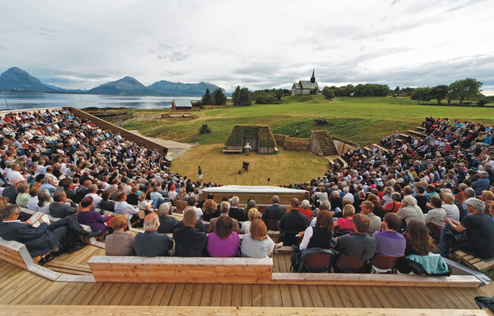
자연적으로도 우수하였지만 지역 자산으로 1190년 에도야 섬 선착장 근처에 세워진 석조 교회가 위치해 있는데 1990년 교회의 800주년을 기념하기 위한 연극이 처음 공연되게 되었습니다. 그 후 호응이 좋아서 14차례에 걸친 공연이 연속적으로 진행되면서 공연규모도 커지게 되고 방문객도 증가하게 되었습니다. 이에 따라 큰 공연장과 방문객 관광 안내소가 필요하게 되었고 환경
<그림 8> 옛 채석장에 위치한 안내소 < IMAGE :www.askim-lantto.no>
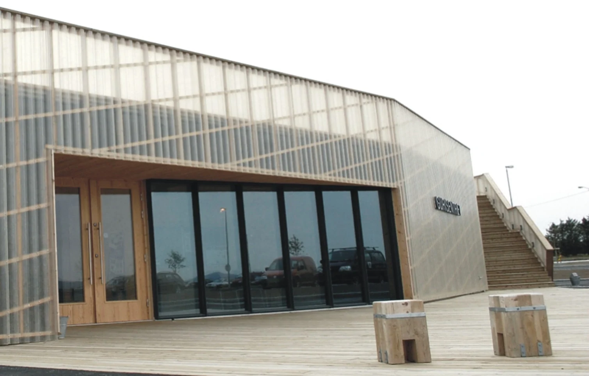
좋은 하나의 섬은 점차 관광객이 몰리는 섬이 되었습니다.교회 주변에는 예전부터 사용해 온 모래 채석장이 있었는데 그 공간을 활용하여 부지 위에 안내소를 설치하였고 주변 얇은 구릉의 지형 차를 살려 옥상과 언덕을 연결하였으며 언덕과 원형극장의 계단식 좌석 연결하는 등 섬의 자연 형태 훼손을 최소화 하는 방법으로 야외 극장을 디자인하여 조화롭게 배치하였습니다.
<그림 9> 나무로 만들어진 극장 벤치 < IMAGE :www.askim-lantto.no>
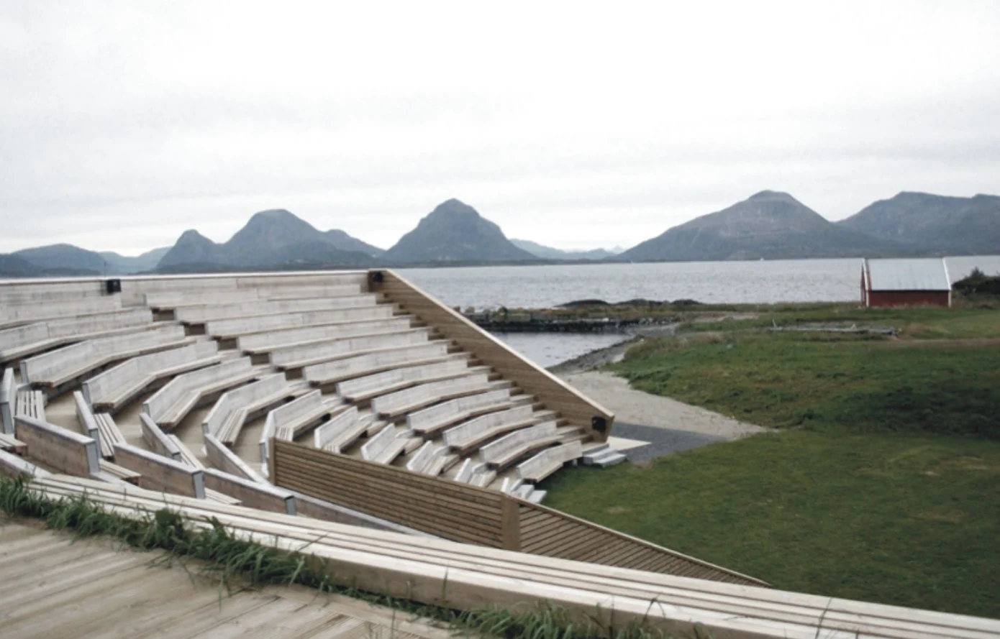
야외 원형무대 내 탈의실 및 준비실, 장비실, 연습실 등과 같은 보조시설 또한 설치되어 있으며 안내소 내에는 카페, 관리 사무실, 전시관 등 다양한 지원시설과 편의시설이 설치되어 이것을 찾는 관광객들에게 양질의 공연서비스와 공공 편의 서비스를 제공하고 있습니다.
앞서 얘기한 6차 산업의 개념을 노르웨이 스몰라 에도야 섬 구리센트레트 야외 극장에서 여실히 볼 수 있는데 친환경적이고 조용한 섬의 환경적 1차적 자원이 공연이라는 3차 산업의 서비스와 결합해 조그마한 섬을 활성화 시키는 복합산업의 사례를 보여주고 있습니다.
<그림 10> 바다 풍경 전망대 < IMAGE :www.askim-lantto.no>
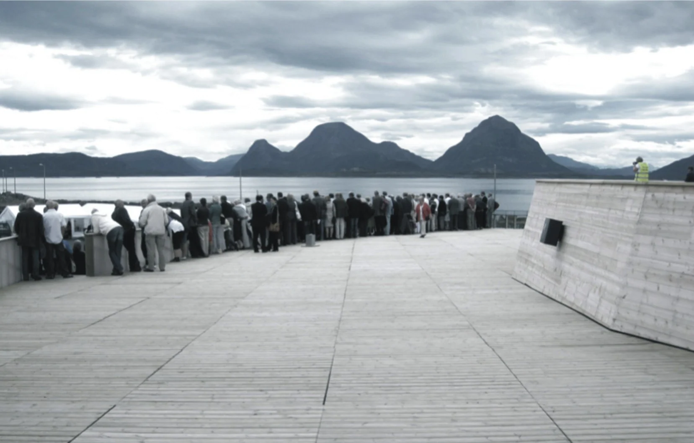
<그림 11> 구릉지를 활용한 야외극장 전경 < IMAGE :www.skyscrapercity.com>
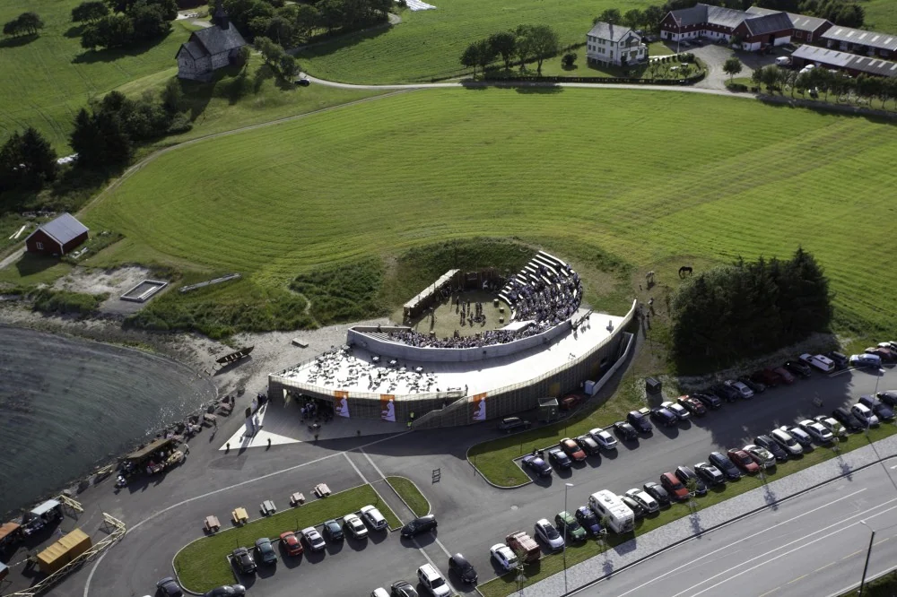
3.스페인 까르따헤나 공공문화센터 El 'B'(El 'B' Auditorium and Congress Center)
까르따헤나 공공문화센터 El 'B'는 스페인 남동부에 위치한 까르따헤나 내 항구에 설치된 복합 공간으로 기존 해변 대지를 활용하여 복합기능을 부여하여 활성화 시킨 사례입니다.
<그림 12> 공공문화센터 El 'B' 전경 < IMAGE :www.metalocus.es>
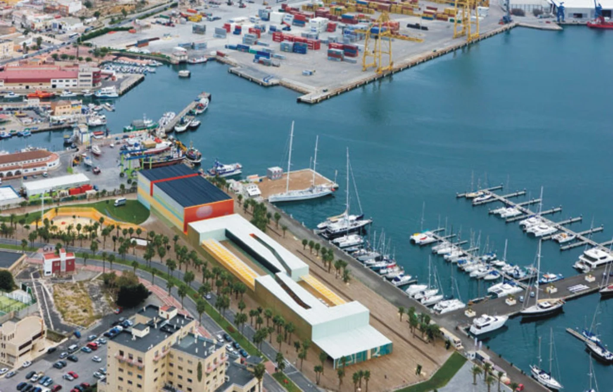
대상지는 폭 20m, 길이 1km에 달하는 좁고도 긴 지형으로 건물이 지어지기 전 '엘 바뗄' 해변이었는데 대상지의 형태를 존중하여 수평적으로 긴 문화센터를 디자인 하였습니다. 수직, 수평의 단순한 형태로 재질에 있어는 플라스틱, 알루미늄을 활용하여 반투명하고 섬세하며 가벼운 느낌으로 연출하였는데 이는 바다에 인접하여 설치된 건물의 특징을 살리기 위해 투명의 이미지를 활용한 것입니다. 또한 바다의 전망을 볼 수 있는 공간을 서비스하기 위해 2층 부분을 카페가 있는 전망공간으로 디자인 하였습니다.
<그림 13> 해안 전망이 가능한 카페 전경 < IMAGE :www.metalocus.es>
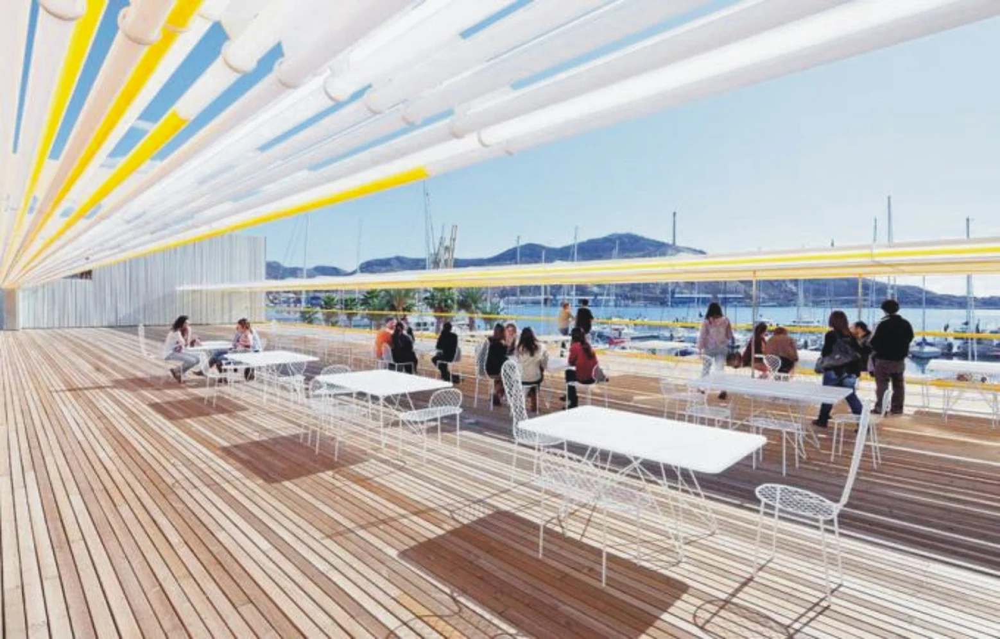
<그림 14> 바다의 투명한 이미지를 연출 < IMAGE :www.metalocus.es>
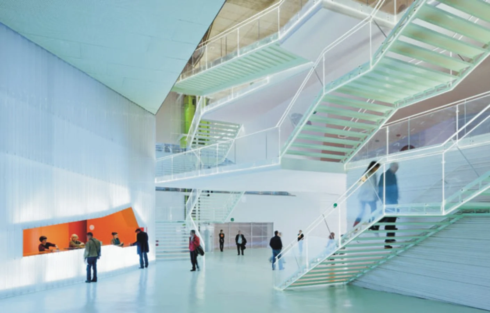
<그림 14> 공공문화센터 El 'B' 전경 < IMAGE :www.architectmagazine.com>
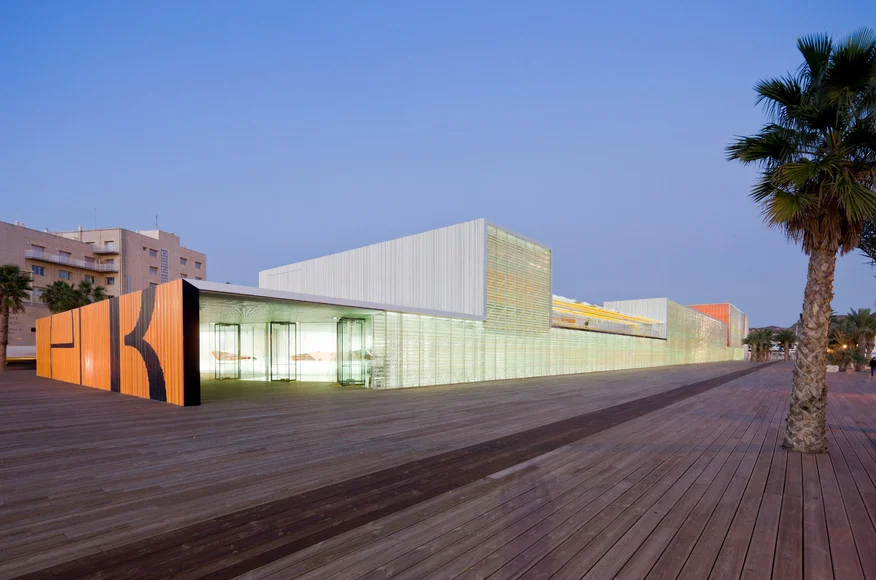
<그림 15> 바다의 투명한 이미지를 연출 < IMAGE :www.polimertecnic.com>
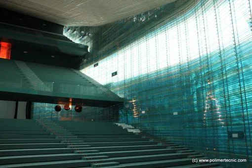
보통의 항구나 해안가의 시설은 기능적인 기반시설들이 많이 배치되어 있고 대부분의 시설이 사용의 편의를 위해 바다와 매우 인접하여 설치되어 있습니다. 이러한 시설들이 친수성과 방문객의 사용 편의를 위해 복합사용 용도로 제공되는 것은 지역의 활성화를 위한 매우 유용한 재생방법입니다. 복합사용을 유도하면 한 장소를 다양한 기능으로 사용할 수 있기 때문에 예산과 운용측면에서 유리한 부분이 있고 하나의 기능이 사용하지 않을 때 다른 기능으로 사용될 수 있기 때문에 계절별 시간별 공동화 현상을 방지할 수 있습니다. 또한 대민 서비스와 직접적이지 않은 시설 등의 활용은 공공성을 매우 향상시키고 시설 제공자의 공익적 이미지를 향상 시킬 수 있는
좋은 전략입니다. 이미 서구에서의 여러 인프라 시설에는 다양한 공공서비스 공간들이 복합 사용되게 되면서 대중과 더 가까워지고 공공의 가치를 향상시키면서 지역 활성화에 매우 큰 영향을 미치고 있습니다. 우리의 해양 공간 환경도 이러한 전략을 활용하여 시설 관리 주체와 지역 주민 그리고 그곳을 방문하는 방문객들 모두 이익이 돌아가는 효과적인 공간 활성화 전략을 적용하여야 겠습니다.
[참고문헌]
국토해양부외, ｢해양 공간의 가치 창출을 위한 해양디자인기술 개발 기획연구｣, 2012
이현성외, ｢해양공간디자인｣, 미세움, 2013.
㈜휴앤즈, 「공공디자인 선진사례 연구답사 제5차 자료」, 한국디자인진흥원, 2008.
진양교, 「Journey to the Memory and Symbol : 43 도시재생공원」, 조경, 2010.
일본 농업 6차 산업화 정책 현황과 과제, 세계농업 제162호
6차 산업화 관련 정책사업 추진실태 진단 및 정책 간 연계방안 연구 (사)한국농업경제학회 2014
권영상·조민선, 「수변공간 활성화를 위한 도시계획 및 설계방향」, 건축도시공간연구소, 2010.
2016년 봄호
1
항 만
2